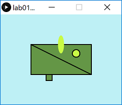

Objectives
static drawings · basic shapes · colour · grayscale · RGB
Lab advice
Your labs are not a race to be the first student finished.
It is very important that you:
- take your time.
- read the instructions carefully.
- ask your lecturer to explain concepts that you don't understand; that is what we are here for!
Where code is given in labs, resist the urge to cut and paste it; maximise your learning by typing the code in.
The more mistakes you make when working through these labs, the more you learn. If you reach the end of the lab and you haven't made any mistakes, a good learning exercise would be to try to produce syntax / logic errors and troubleshoot them.
Opening the PDE (Processing Development Environment)
Go to the directory/folder where you installed your processing app.
You should see a list of files and folders similiar to the image below:

Double click in the processing application (highlighted by the red rectangle).
The PDE (Processing Development Environment) should launch.
Exercise 1 - Induction
In exercise 1, we started with this code:
//Setting up the display window
size(400,300);
background(100);
//Drawing a rectangle
rect(20,30,50,30);
//Drawing a square
rect(40,5,20,20);
//Drawing a line
line(5,30,20,90);
//Drawing an ellipse
ellipse(85,50,20,60);
//Drawing an circle
ellipse(50,80,15,15);which produced this output:

The exercise asked you to change the above code so that the following output was produced:

Solution to Induction Exercise 1
The solution to exercise 1 from Induction was this:
//Setting up the display window
size(400,300);
background(100);
//Drawing a rectangle
rect(100,100,200,100);
//Drawing a square
rect(150,200,20,20);
//Drawing a line
line(100,100,300,200);
//Drawing an ellipse
ellipse(200,100,20,60);
//Drawing an circle
ellipse(250,130,25,25);Notice that the only changes were the values of the actual parameters passed to the functions.
Using RBG for display window background
In the Induction, Exercise 1, we used the Grayscale colour scheme to colour our background:
//Setting up the display window
size(400,300);
background(100);
//Drawing a rectangle
rect(100,100,200,100);
//Drawing a square
rect(150,200,20,20);
//Drawing a line
line(100,100,300,200);
//Drawing an ellipse
ellipse(200,100,20,60);
//Drawing an circle
ellipse(250,130,25,25);If you haven't done so in the previous step, enter the above code into a new Processing sketch and run it to ensure your code is working as expected.
background() function
The background() function sets the background colour of the display window.
The background function is overloaded. This means that we can use the same function name with different sets of parameters e.g. :
background (g)
g = grayscale colour (a number between 0 and 255 inclusive)
background(r,g,b)
r = red colour (a number between 0 and 255 inclusive)
g = green colour (a number between 0 and 255 inclusive)
b = blue colour (a number between 0 and 255 inclusive)In the above code, we used the Grayscale version of the background function.
Now we will try the RBG version of background, which will use a combination of RGB (red, green and blue) values to display a colour on the window.
Visit the following website and choose a colour you like:
In your open sketch, amend the background() function to accept the RGB values for your selected colour as parameters.
For example, we chose a light blue:
background(190,240,245);Changing the look of the shapes
In this step, we will look at colouring in the shapes we have just drawn and also changing their outline.
fill() function
The fill() function fills shapes with a chosen colour. We will use the RGB colours to select a colour. All shapes that are drawn after the fill function is called, will be filled with the chosen colour.
The syntax of the RGB fill function is similar to the background function and is:
fill(r,g,b)
r = red colour (a whole number between 0 and 255 inclusive)
g = green colour (a whole number between 0 and 255 inclusive)
b = blue colour (a whole number between 0 and 255 inclusive)In your open sketchbook, enter the following code before you draw any shapes:
fill(100,150,70);Run your code; all your shapes should be coloured dark green.
Now we will set the ellipses to be a different colour i.e. light green. Enter the following code before your first ellipse() function call.
fill(200,250,70);Order of statements matter
Note how the order of statements matter. All shapes drawn after the first fill() function is called are coloured dark green. All shapes drawn after the second fill() function is called are coloured light green (see picture below):
Try moving the first ellipse() function call before the second fill() function call. What happened? Only the second ellipse is coloured light green.
Move the ellipse function back to it's original location so both ellipses are coloured light green.
noStroke() function
A stroke is the outline of a shape. The noStroke() function disables the outline on shapes that are drawn after the function is called.
In your open sketchbook, enter the following code before your draw any shapes:
noStroke();When you run your code, you should have something similar to this:
stroke() function
The stroke() function enables the outline on shapes that are drawn after the function is called. When you call stroke(), you need to specify a colour.
The syntax of the stroke function is also similar to the fill and background function and is:
stroke(r,g,b)
r = red colour (a whole number between 0 and 255 inclusive)
g = green colour (a whole number between 0 and 255 inclusive)
b = blue colour (a whole number between 0 and 255 inclusive)If we wanted all shapes except the first ellipse (the oval) to have a stroke, you should make the following changes:
- remove the call to noStroke() that you just put into your code.
- call noStroke() before the first ellipse is drawn.
- call stroke(0,0,0) before the second ellipse is drawn to enable a black stroke on the second ellipse.
Your output should look similar to this:
strokeWeight() function
The strokeWeight() function allows you to choose the thickness of a line/outline on shapes. The chosen thickness will apply to all lines/shapes that are drawn after the function is called. The thickness is specified in pixels and the default thickness is 1 pixel.
If we wanted all shapes to have thickness of 3 pixels, enter the following code before you draw any shapes:
strokeWeight(3);Your output should look similar to this:

Exercises
The exercises are typically based on the functions we covered in the previous steps in this lab (and the associated lectures).
For each exercise listed below, open a new sketch.
In this module, the Challenge Exercises are exactly that...challenges! So if you can't do them straight away (or at all), don't panic. In most cases, they require additional thinking and research. You may need to visit the Processing website for additional information to attempt them.
Exercise 1
Replicate the basic Microsoft logo as shown in the picture below:

Hint: You could use this website to find the exact Microsoft RGB colours in their logo.
Exercise 2
Replicate the beats (Dr. Dre) logo as shown in the picture below:

Exercise 3
Convert the Microsoft logo into a grayscale logo as shown in the picture below:

Hint: the easiest way to do this is to use the grayscale fill function as opposed to the RBG version of it. The grayscale version of fill takes one parameter, a number between 0 and 255 inclusive. This numver represents a shade of gray between black (0) and white (255) e.g.:
fill(150); //sets a medium gray colour for all shapes drawn after it
fill(0); //sets a black colour for all shapes drawn after it
fill(255); //sets a white colour for all shapes drawn after itChallenge 1
Write the code that will draw the typical control buttons you would see on a media player. An example image would be:
Hint: you will need to read up on the triangle() function on the Processing website.
Challenge 2
Draw any picture you fancy as your profile picture for social media. No need to actually change your profile picture, just play around with drawing one!
Solutions
The solutions for this lab can be found here.
If you require unzipping software, 7zip is a good choice: http://www.7-zip.org/ (or Keka for Mac http://www.kekaosx.com/en/)
After unzipping the solutions, it might be a good idea to copy the folders to your sketchbook folder. From Processing, you could then use File, followed by Sketchbook to easily open them.